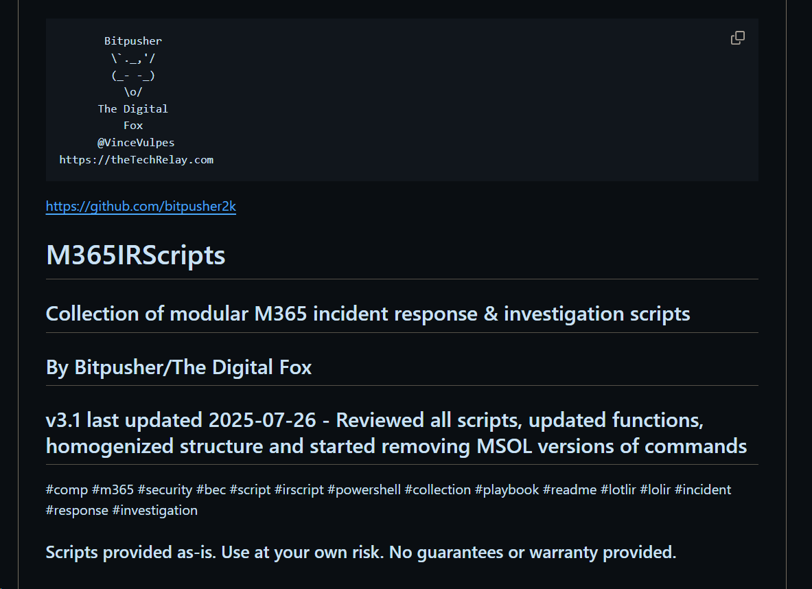

M365 BEC investigation easy as Cake
Posted on 2025-10-15 in code
Business email compromise investigation
By far the most common type of impactful security incident is the business email compromise, or "BEC" - and the most common platform for a BEC is M365. After a threat actor gains access to someone's email account there are a number of nefarious and damaging things they can do - including sending malicious spam out from the account, hijacking email conversations, and instigating wire fraud by redirecting payments.
The best presentation I've seen on how to investigate these incidents in a long time was recently uploaded to YouTube. It's by Patterson Cake - an expirenced incident responder who emphasizes simplicity, effectiveness, and repeatability in his workflows:
Business Email Compromise Detect, Respond, & Prevent w/ Patterson Cake
Investigating & responding to M365 BEC is a bit technical - this information will be of most benefit to those already somewhat familiar with email, M365 administration, Excel, etc..
Slides are available here and Patterson has scripts to support BEC investigation on his GitHub at https://github.com/secure-cake/m365-bec-resources.
And more BEC investigation scripts
If you're still here you may be interested in more resources for M365 BEC, and as it happens I've written a number of scripts that support various aspects of M365 BEC incident response and investigation - all are available at https://github.com/bitpusher2k/M365IRScripts.

These scripts are targeted and SMB/SME incident response, where more sophisticated enterprise tools such as Microsoft Sentinel or other SIEM are not available. All require only administrative access to the M365 tenant, and the installation of a few PowerShell modules. Overview of BEC response & investigation process is in the ReadMe. Again, a certain level of familiarity with M365 and PowerShell will be needed to get the most out of this repository.
Of particular utility for manual investigation of incidents for me are 05-ProcessUnifiedAuditLogFlatten.ps1 which flattens out the blob of JSON data in a CSV export from the Unified Audit Log, and 06-Lookup-IPInfoCSV.ps1 which takes IP addresses from a column in a CSV and adds geolocation, ISP, and other valuable information (based on the service selected to look it up online).
Feel free to reach out to me with any feedback or questions.
Walk on,
\`._,'/
(_- -_)
\o/